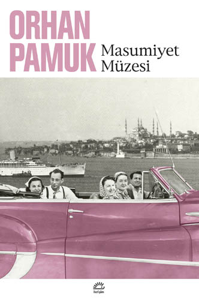

OĞUZ ATAY - TUTUNAMAYANLAR
Selim Işık’ın intihar ettiğini öğrenen Turgut Özben, ihmal ettiğini düşündüğü arkadaşının geçmişinin izini sürmeye ve Selim’in tanıdığı insanlar aracılığıyla onu tanımaya çalışır. Her insana farklı bir yönünü gösteren Selim’in görüntüsü, Turgut’un bu insanlarla konuşması sonucu okuyucunun ve Turgut’un gözünde netlik kazanacaktır. Romanda bir çok kişi vardır ama her biri aslında Selim’in hayatındaki kişilerdir ve tüm anlatılanlar Selim Işık’ı aydınlatır. Selim Işık “düşünen ve sorgulayan insan”ın simgesidir ve bu yüzden “tutunamamış”tır...

ORHAN PAMUK - MASUMİYET MÜZESİ
Tekstil zengini Basmacı ailesinin 30 yaşındaki oğulları Kemal'in Sibel ile nişanlanmaya doğru giden bir ilişkisi vardır. Sibel'e çanta almak için gittiği dükkânda yıllardır görmediği 18 yaşındaki uzak akrabası Füsun ile karşılaşır. Füsun'dan etkilenen Kemal, zamanla Füsun ile buluşmaya ve birlikte olmaya başlar. Füsun, tezgahtarlık yapmanın dışında üniversite sınavlarına hazırlanmakta ve Kemal ile birlikte matematik çalışmaktadır.[18] Günler süren buluşmaları Kemal'in Sibel ile nişanlanmasından sonra kesilir. Kemal, Füsun'u Merhamet Apartmanı'nda buluştukları dairede, her gün aynı saatte beklemeye başlar. Fakat Füsun, buluşmaya gelmez. Füsun'a ulaşamayan Kemal, mutsuz günler geçirmeye başlar. Sibel'den ayrılır ve Füsun ile kaldığı dairede Füsun'un eşyaları ile birlikte zaman geçirir...
REŞAT NURİ GÜNTEKİN - ÇALIKUŞU
Feride, küçük yaşta anne ve babasını kaybeder. Teyzesinin korumasıyla bir Fransız yatılı okulunda okur. Yaramazlıkları yüzünden arkadaşları, okulda, ona “Çalıkuşu” adını takarlar. Feride, yaz tatillerini teyzesinin köşkünde geçirir. Teyzesinin yakışıklı oğlu Kamuran ile birbirlerini severler ve nişanlanırlar. Feride, düğün günü, bir kadının getirdiği mektuptan Kamuran’ın lsviçre’de iken Münevver adında hasta bir kızla ilişkisi olduğunu, ona evlenme sözü verdiğini öğrenir öğrenmez, her şeyi yüzüstü bırakıp kaçar. Feride, Anadolu’nun çeşitli yerlerinde (Zeyniler Köyü, Bursa, Çanakkale … ) öğretmenlik yapar...
SABAHATTİN ALİ - CANIM ALİYE RUHUM FİLİZ
Kitabımız ; tamamıyle yazarın eşine ve kızına yazdığı mektuplardan oluşuyor. bu arşivi bizlere yazarın kızı Filiz Hanım'ın vesilesi ile aktaran Sevengül Sönmez'e de teşekkür ediyoruz . çok samimi mektupları okurken insan elbette duygulanıyor.. o kadar sade ve candan duyguları yazardan okumak bır nevı ozel yasantısına da tanık olmak anlamına gelıyor.. ama biz kitapta sadece yazarın Aliye Hanım'a ve kızına yazdığı mektupları okuyabılıyoruz.. Aliye Hanım'dan gelmıs bazı kelımelerı de yazarın verdıgı cevap mektuplarında gorebılıyoruz.. istedım kı Aliye Hanım'dan gelen mektuplarda olsa keşke .. ancak bu mektuplar konulmamıssa elbette yazarın kızı olan Filiz Hanım'ın bir bildiği olmalı..DAHA FAZLASI